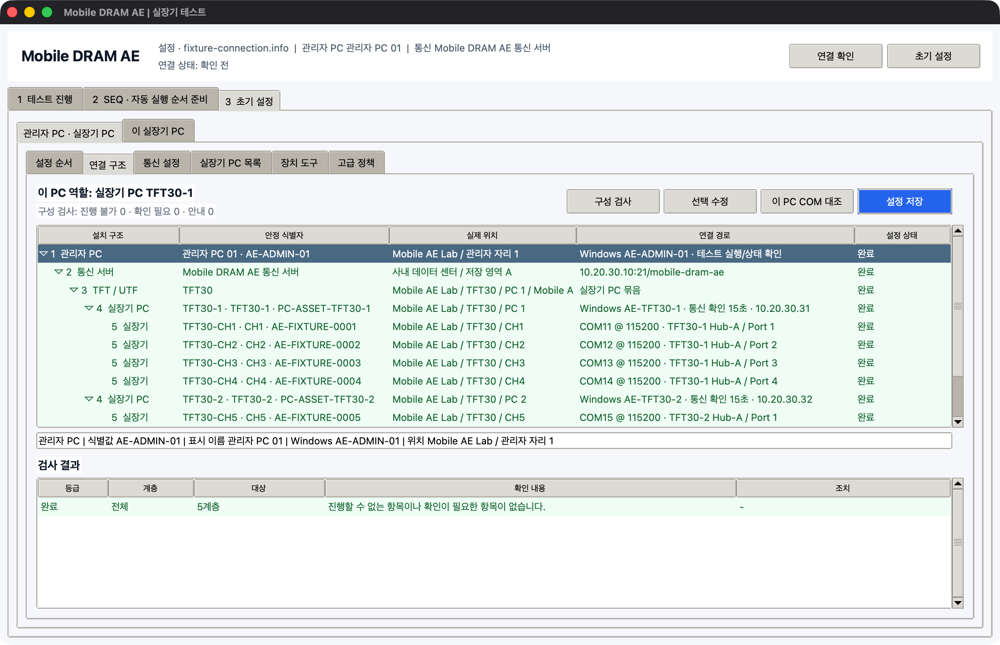

설치 구조와 연결 정보
프로그램은 현장의 물리 구조와 Windows 설정을 함께 관리합니다. 이름만 비슷한 PC와 실장기를 혼동하지 않는 것이 중요합니다.
다섯 단계 구조
관리자 PC
└─ 통신 서버
└─ TFT 또는 UTF
└─ 실장기 PC
└─ 실장기
| 단계 | 예 | 확인할 값 |
|---|---|---|
| 관리자 PC | 관리자 PC 01 | Windows 이름, 실제 위치 |
| 통신 서버 | Mobile DRAM AE 통신 서버 | 주소, 포트, 전용 폴더 |
| TFT/UTF | TFT30 | 설치 위치 |
| 실장기 PC | TFT30-1 | Windows 이름, IP, PC 자산 ID |
| 실장기 | CH1 | 실장기 자산 ID, SoC, COM, USB 위치 |
TFT/UTF와 실장기 번호
일반적인 번호는 다음과 같습니다.
| 실장기 PC | 연결되는 실장기 번호 |
|---|---|
| TFT30-1 | CH1 ~ CH4 |
| TFT30-2 | CH5 ~ CH8 |
| TFT30-3 | CH9 ~ CH12 |
| TFT30-4 | CH13 ~ CH16 |
현장 번호가 다르면 실제 값을 그대로 입력할 수 있습니다. CH11 하나만 등록하거나 문자로 된 번호를 사용해도 됩니다. 단, 실장기 PC 한 대에는 최대 4대만 등록할 수 있습니다.
실장기 PC에 입력할 정보
| 화면 항목 | 의미 | 예 |
|---|---|---|
| TFT/UTF 이름 | PC가 설치된 단위 | TFT30 |
| 실장기 PC 이름 | 현장에서 부르는 PC 이름 | TFT30-1 |
| 내부 식별값 | 통신 파일에서 사용하는 고정값 | tft30-pc1 |
| PC 자산 ID | 회사 자산 관리 번호 | PC-ASSET-TFT30-1 |
| Windows 이름 | hostname 결과 |
AE-TFT30-1 |
| IP 또는 Host | PC 확인용 주소 | 10.20.30.31 |
| 실제 위치 | 장비를 찾을 수 있는 위치 | Mobile AE Lab / TFT30 / PC 1 |
내부 식별값은 한번 운용을 시작한 뒤에는 바꾸지 않습니다. 표시 이름이나 실제 위치는 필요할 때 수정할 수 있습니다.
실장기에 입력할 정보
기본 정보
- 실장기 자산 ID
- 실장기 번호
- 실장기 모델과 Serial
- SoC 제조사와 SoC 이름
- DRAM 종류 / Part
- Lot
- 장착 자재 ID
- 현재 Binary 이름·버전·원본 폴더
- 고장 상태
연결 정보
- Console COM
- Baud rate
- 예상 COM HWID
- USB Hub/Port 또는 케이블 라벨
- Binary 업데이트에 사용하는 COM 또는 ADB serial
테스트 중 확인하는 정보
- 현재 테스트
- 사용 중인 SEQ
- 없음, 진행 중, PASS, FAIL, 중지
- BL1, BL2, LK, OS
- 현재 Grid, 완료 Grid, 전체 Grid
COM 식별 기준
COM 번호만 저장하면 USB를 다시 연결했을 때 다른 번호로 바뀔 수 있습니다. 가능하면 다음 값을 함께 기록합니다.
- 실장기 자산 ID
- 실장기 Serial
- COM HWID
- USB Hub/Port 또는 케이블 라벨
- 고정 ADB serial
프로그램은 실행 직전에 저장된 COM과 실제 Windows 장치를 다시 비교합니다. 하나의 장치로 확실히 확인되는 경우에만 변경된 COM을 제안합니다.
COM 동시 사용 제한
같은 실장기의 Console COM은 한 프로그램만 열어야 합니다.
- SK Commander를 사용하는 동안 직접 COM 연결을 열지 않습니다.
- 직접 COM으로 SEQ를 보내는 동안 SK Commander Console을 닫습니다.
- Binary 업데이트 중에는 Console과 다른 다운로드 프로그램을 함께 실행하지 않습니다.
구조 검사 결과
3 초기 설정 > 연결 구조 > 구성 검사에서 다음 상태를 확인합니다.
| 상태 | 의미 |
|---|---|
| 완료 | 필요한 값이 준비됨 |
| 확인 필요 | 테스트 전 작업자가 확인해야 함 |
| 진행 불가 | 중복 또는 누락 때문에 현재 설정으로 실행할 수 없음 |
